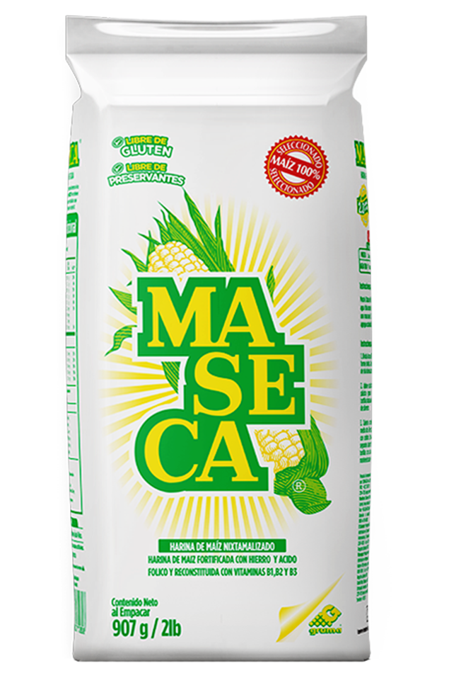
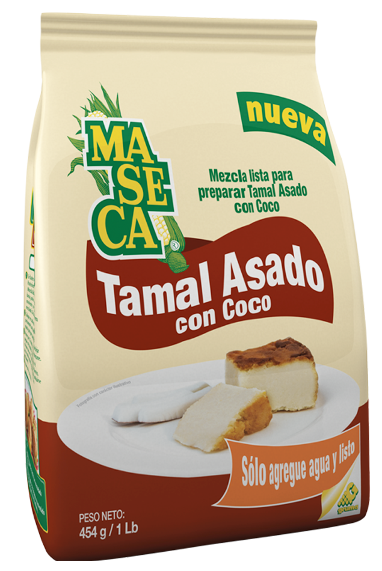
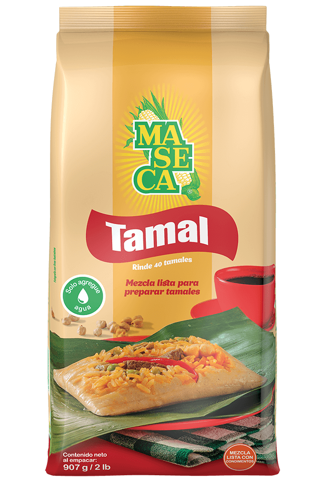
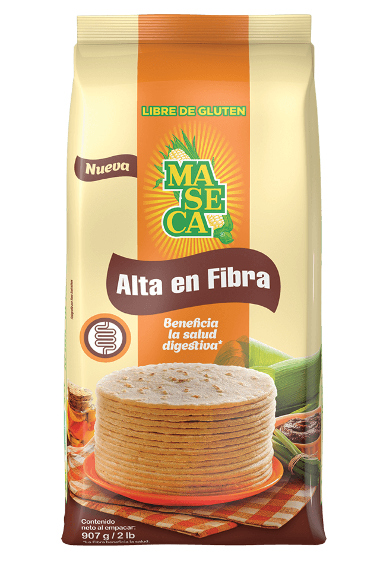

Maseca es la harina de maíz elaborada con el proceso tradicional del nixtamal. Hecha 100% con grano entero, enriquecida y fortificada con vitaminas y minerales. Ingredientes: Maíz, niacina, hierro, tiamina, roboflavina y ácido fólico.

MASECA® mezcla lista para Tamal Asado viene con todos los ingredientes necesarios para lograr fácilmente la masa con el sabor tradicional del tamal asado. Ingredientes: Harina de maíz, canela, natilla, coco, leche agria y azúcar. Encuentrela en presentación de 1 lb.

MASECA® masa lista para Tamal, está elaborada con maíz y todos los ingredientes necesarios para obtener fácilmente la deliciosa masa de tamal tradicional.
Ingredientes: Harina de maíz fortificada (harina de maíz, hierro, niacina, tiamina, riboflavina y ácido fólico), hojuela de papa, grasa vegetal, sabor tamal (maltodextrina, harina de arroz, dextrosa, sal, glutamato monosódico como potenciador de sabor), cebolla y ajo en polvo, mezcla de especias en polvo, azúcar, ácido cítrico (como acidulante),sabor a tocino, sabor a pollo, achiote y cúrcuma (como colorantes naturales), proteína hidrolizada de soya y aceite de soya).
Encuentrela en presentación de 1 lb

Descubrí de cerca su textura única, el color perfecto para tus preparaciones y beneficios para vos y tu familia.
Ingredientes: Maíz, fibra de maíz, niacina, hierro, tiamina, riboflavina y ácido fólico.
Libre de Gluten.
Encuentrela en presentación de 2 lb

La mezcla lista para preparar Empanadas MASECA® permite hacer empanaditas siempre ricas y bien tostaditas para los más pequeños de la casa.
Ingredientes: Harina de maíz enriquecida (harina de maíz, niacina, hierro, tiamina, riboflavina y ácido fólico), harina de arroz, consomé al 5% (sal, azúcar, glutamato monosódico (como exaltante de sabor), sabor a pollo, ajo en polvo, proteína vegetal hidrolizada, grasa vegetal, mezcla de especias,cúrcuma y perejil) y almidón de tapioca. Contiene soya.